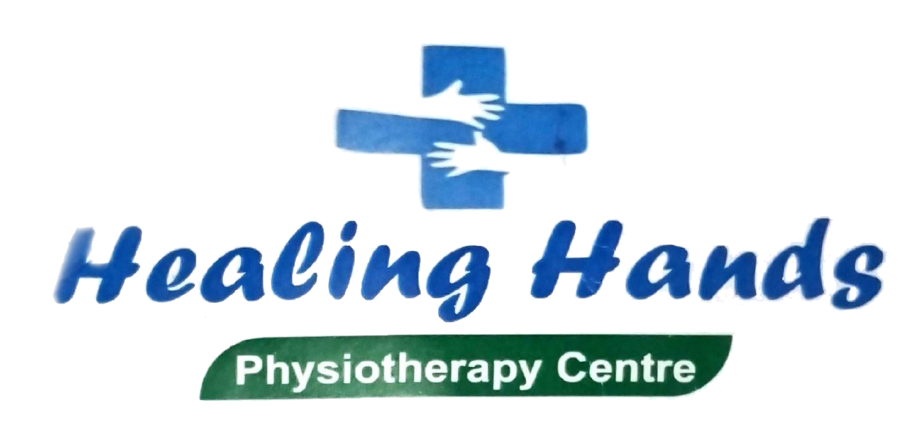

therapist expertise in cerebral palsy, Autism , hydrocephalus facial palsy 17 years experience
Dr. Mudasir Amin founded Healing Hands Physiotherapy and Disability Rehabilitation Centre, a physiotherapy clinic a decade of experience working as a pediatric physical therapist. Dr. Mudasir Amin passion has always been working with children and she has worked in a variety of pediatric settings including early intervention, outpatient, and home based settings. Dr. Mudasir Amin has dedicated her career to specializing in the treatment of children with neurological, genetic and developmental based disorders and uses a creative and highly engaging treatment style to work towards improving functional mobility for all children. Dr. Mudasir Amin is devoted to helping children achieve their highest potential through fun, unique and innovative treatment techniques and uses a wide variety of accomplish the goals of the child and family.
Pediatric Physical Therapist spreading radical acceptance and hope. Children are not defined by their diagnosis and we get results with all children. Our clinic stands out as a premier destination, offering advanced physio-care through a highly experienced team of physiotherapists and Meticulously, Lajpat Nagar-1, New Delhi .
"It is hard to put into words to describe the exceptional services and care Pediatrics provides. In a nutshell, if you want your child to reach their maximum potential, then Dr. Mudasir Amin. is the therapist you need to see!"
Children don’t need perfection—they need patience, support, and belief in their potential.”
Satisfaction
Patients / Year
Years of experience
I came to healing hands physiotherapy centre 6months ago, my son is now 5years old, he was diagnosed as global developmental delay and many issues were there. I was taking therapy since from 4 year f but there was no such improvement, my child was not able to walk, partial sitting was there, no independent standing was there even hand function was zero but after coming to healing hands drastic changes was happened with dr. Mudasir Amin mam, the most humble and generous women who keep encouraging my son for acheiving milestone. Now my son has achieved independent standing , walking n proper hand function within only 6 month of therapies..
I have been coming to Dr Mudasir’s clinic since last 6 months after my daughter was diagnosed with certain motor development issues. Dr Amin is very kind, helpful and extremely patient person. She not only counselled me but also made me believe that with right approach we can make difference in her development and confidence. I must say that in such a short span I have noticed positive response in my daughter’s overall physical and emotional health. I put complete trust in her abilities and guidance. She has a great support in her staff member Shaina who puts her heart to work with children and is very affectionate. I hope god gives both of them strength to help children lead independent and happy lives. Thank you Dr Amin and Shaina.
My child is 6 year olds and has a speech , cognition delay and was really hyperactive. We stay in Canada and doctors there had said he is on the spectrum. Getting him the best care was obviously the priority, so I started doing my research to get him help and more intensive therapies. I got in touch with Dr. Mudassir Amin and she guided me regarding Occupational Therapy so I could start with some basic help at home while I was back in Canada. I was already planning my move, when I came here, we went directly to her and she did and in-depth assessment for my child and was confident from day 1 that my child is not on the spectrum but exhibiting some symptoms because of his undiagnosed ADHD and will recover completely with the right therapy. And this long post is a testament that my child is doing so well and is really improving in his skills and understanding. We do intensive therapy 6 days a week and in 2 months since the beginning of the therapy my child has made very good progress . Dr. Mudassir really takes into account the parents concern and works on that as well as guiding the parent for later care. I am so glad that I came in contact with her.
© copyright 2025-26 all Rights Reserved | | Design by : Achievers Web Technologies
{kind=link}
{kind=link}
{kind=link}
{kind=link}
{kind=link}
{kind=link}